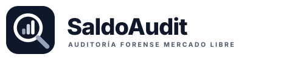

Concepto & Arquitectura de Marca
SaldoAudit se posiciona en el cruce entre una firma de auditoría contable rigurosa y un software fintech de alta velocidad. El isotipo integra un escudo de protección (defensa contra los cobros indebidos del marketplace) con un tilde de verificación contable (fondos auditados y acreditados en cuenta). La marca nunca apela al amarillismo ni a promesas mágicas: su reputación descansa en la trazabilidad algorítmica y el cumplimiento normativo.
Paleta Cromática Oficial (Hacé clic en cualquier tarjeta para copiar el HEX)
Galería de Logos Oficiales
Archivos vectoriales SVG descargables para membretes, firmas de correo, redes y presentaciones.
logo-saldoaudit.svg
Uso: Facturas, membretes, presupuestos, reportes de auditoría y fondos blancos.

logo-saldoaudit-dark.svg
Uso: Barra superior oscura (Navbar), banners nocturnos y diapositivas ejecutivas.

logo-saldoaudit-icon.svg
Uso: Foto de perfil de WhatsApp Business, avatar de Gmail, icono de app móvil y Favicon web.


logo-saldoaudit-mono.svg
Uso: Documentos blanco y negro, remitos impresos, grabados láser y sellos de agua.

Zona de Exclusión & Reglas de Co-Branding
El isotipo del escudo debe conservar un margen perimetral libre equivalente a la mitad de su altura (0.5X). Nunca colocar texto, líneas divisorias o bordes pegados al símbolo.
Al mostrar reportes conjuntos (ej. SaldoAudit + Hudson o SaldoAudit en Mercado Libre), se separan mediante una línea vertical divisoria en gris tenue (#E2E8F0) manteniendo idéntica altura visual sin distorsionar proporciones.
Tono de Voz & Personalidad de la Firma
Hablamos con números exactos: nunca "detectamos varios reclamos", sino "detectamos 15 órdenes críticas por $599.518 ARS". La precisión matemática genera confianza inmediata.
Cero honorarios fijos que castiguen al vendedor si MeLi opera bien. Cobramos el 10% del reporte entregado o el 20% solo sobre el dinero que efectivamente entra a Mercado Pago.
Invocamos los propios términos y condiciones del marketplace (Programa de Protección al Vendedor) sin confrontaciones agresivas, pero con contundencia probatoria.